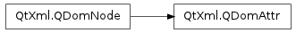

QDomAttr ¶

Synopsis ¶
Detailed Description ¶
The PySide.QtXml.QDomAttr class represents one attribute of a PySide.QtXml.QDomElement .
For example, the following piece of XML produces an element with no children, but two attributes:
<link href="http://qtsoftware.com" color="red" />You can access the attributes of an element with code like this:
e = # some QDomElement... #... a = e.attributeNode("href") print a.value() # prints "http://qtsoftware.com" a.setValue("http://doc.trolltech.com") # change the node's attribute a2 = e.attributeNode("href") print a2.value() # prints "http://doc.trolltech.com"This example also shows that changing an attribute received from an element changes the attribute of the element. If you do not want to change the value of the element’s attribute you must use PySide.QtXml.QDomNode.cloneNode() to get an independent copy of the attribute.
PySide.QtXml.QDomAttr can return the PySide.QtXml.QDomAttr.name() and PySide.QtXml.QDomAttr.value() of an attribute. An attribute’s value is set with PySide.QtXml.QDomAttr.setValue() . If PySide.QtXml.QDomAttr.specified() returns true the value was set with PySide.QtXml.QDomAttr.setValue() . The node this attribute is attached to (if any) is returned by PySide.QtXml.QDomAttr.ownerElement() .
For further information about the Document Object Model see http://www.w3.org/TR/REC-DOM-Level-1/ and http://www.w3.org/TR/DOM-Level-2-Core/ . For a more general introduction of the DOM implementation see the PySide.QtXml.QDomDocument documentation.
- class PySide.QtXml. QDomAttr ¶
- class PySide.QtXml. QDomAttr ( x )
-
Parameters: x – PySide.QtXml.QDomAttr Constructs an empty attribute.
Constructs a copy of x .
The data of the copy is shared (shallow copy): modifying one node will also change the other. If you want to make a deep copy, use PySide.QtXml.QDomNode.cloneNode() .
- PySide.QtXml.QDomAttr. name ( ) ¶
-
Return type: unicode Returns the attribute’s name.
- PySide.QtXml.QDomAttr. ownerElement ( ) ¶
-
Return type: PySide.QtXml.QDomElement Returns the element node this attribute is attached to or a null node if this attribute is not attached to any element.
- PySide.QtXml.QDomAttr. setValue ( arg__1 ) ¶
-
Parameters: arg__1 – unicode Sets the attribute’s value to v .
See also
- PySide.QtXml.QDomAttr. specified ( ) ¶
-
Return type: PySide.QtCore.bool Returns true if the attribute has been set by the user with PySide.QtXml.QDomAttr.setValue() . Returns false if the value hasn’t been specified or set.
See also
- PySide.QtXml.QDomAttr. value ( ) ¶
-
Return type: unicode Returns the value of the attribute or an empty string if the attribute has not been specified.